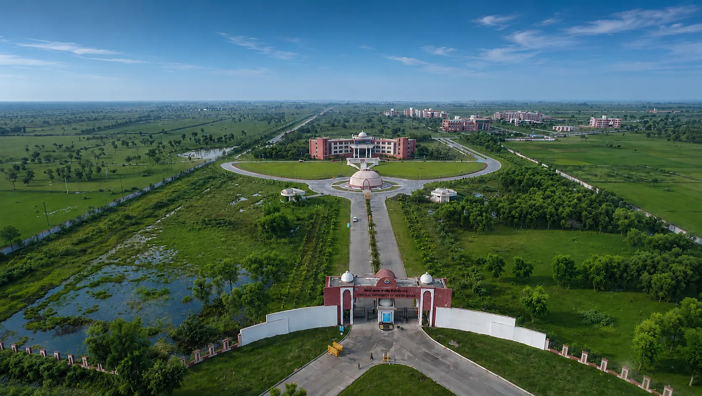

About University
About CUSB
Central University of South Bihar, Gaya, India, is one among 54 such universities of the Federal Government under the Department of Higher Education, Ministry of Education, Government of India. It was established under the Central Universities Act, 2009 (Section 25 of 2009) as Central University of Bihar (CUB), and renamed Central University of South Bihar (CUSB) by the Central Universities (Amendment) Act, 2014.
With the motto Collective Reasoning, the University conducts academic and administrative activities from its permanent 300-acre campus at Panchanpur, about 15 km from Gaya. Its academic and residential buildings include Aryabhatta Bhawan, Chanakya Bhawan, Malaviya Bhawan, Vivekanand Lecture Complex, Sangharam Guest House, Gargi Sadan and Maitreyi Sadan.
The University began academic work at the Birla Institute of Technology, Patna in 2009, launching its first two-year M.A. programme in Development Studies in the 2009–10 academic year. It offers a research-oriented, multidisciplinary learning environment with Choice Based Credit System and internal evaluation at undergraduate and postgraduate levels.
Campus Address: SH-7, Gaya Panchanpur Road, Village – Karhara, Post. Fatehpur, Gaya – 824236 (Bihar).

Founding legislation
Central Universities Act, 2009
Central Universities Act, 2009 was passed by Parliament in the 60th year of the Republic of India to establish universities governed by the Federal Government for teaching and research across India. Central University of Bihar was one of the 16 new Central Universities established under the Act; its name was changed to Central University of South Bihar by the Central Universities (Amendment) Act, 2014.
Since 2009
2 March 2009First Vice-Chancellor Prof. Janak Pandey joined; the University began functioning from Hindi Bhawan, Patna.
1 September 2009The first academic session began with the postgraduate programme in Development Studies.
26 September 2013The first convocation was held, with Hon’ble Shri M. Hamid Ansari, Vice President of India, as Chief Guest.
27 February 2014Bhoomi Pujan for the 300-acre Panchanpur campus was held.
31 August 2015The foundation stone for Phase I buildings was laid by Union HRD Minister Smt. Smriti Zubin Irani.
2016CUSB was accredited with NAAC Grade ‘A’ in its first assessment and placed 94th in the NIRF university ranking.
July 2017–18Administrative work, then academic activities, moved to the permanent Panchanpur campus.
2020CUSB was ranked first in Bihar among government universities in the Education World India ranking.
History and Development
Academic development and schools
The University progressively introduced postgraduate, integrated undergraduate, M.Tech, M.Ed., LLM and Ph.D. programmes. Its statutory framework provides for fourteen Schools, including Mathematics, Statistics & Computer Science; Physical & Chemical Sciences; Earth, Biological & Environmental Science; Social Sciences & Policy; Human Sciences; Languages & Literature; Media, Arts & Aesthetics; Management; Education; Law & Governance; Vocational Studies; Technology; Health Sciences; and Agriculture & Development.
Governance framework
Statutes & Ordinances
The Central University act, statute, ordinances and regulations set out the powers of the university, and rules and conduct for its functioning and business. The present statute and ordinances are available as apart of Indian Gazette and available online as well, which is provided here.
Statutes
The statute set out the objective and powers of the University and define administrative framework and statutory officers as well as overall academic structure (schools). The statue in essence contain provision for its governance and constitution. The statute of university approved by the visitor, her highness the then president of India Mrs. Pratibha patil and came into force since 2009. Subsequently amendments were made to provide the academic framework and 11 schools were incorporated into the statue.
Ordinances
Ordinances set out rules and regulations and their scope of application covering all aspects of university business and its functioning. The present version of ordinance was approved by the visitor, his highness hon'ble President Mr. Pranab Mukherjee and is a part of gazette of India extra ordinary part III section 4 No. 305, 17th August, 2016. Additionally, there are academic ordinances, the details of which are given in student page and individual department web pages
Core directives
Vision
Mission
Vision & Mission
To develop enlightened citizenship of a knowledge society for peace and prosperity of individuals, nation and the world, through promotion of innovation, creative endeavors and scholarly inquiry, and to be a global destination for higher education and research.
To serve as a beacon of change through multi-disciplinary learning, creating a knowledge community with strong character, value-based transparent work ethics, creative and critical thinking, and holistic development for the people of India.
Official documents
Regulation and Policy Documents
Recruitment Rules
Purchase Rule and Policy
Manual/ SOP
CUSB Regulations Relating to Scholarship Schemes – 2017
Standard Operating Procedure (SOP) for Guest House Booking
ICT Policies and Guidelines
Library Policies and Guidelines
Hostel Manual
Central Instrumentation Facility (SOP)
SOP- Day Care Centre
SOP- Lecture Hall & Booking Format
Guidelines for Consultancy Policy Document
Model Framework for Implementation of National Education Policy-2020
Guidelines for Organising Seminars
Teacher Deputation Policy
Ordinances Relating to the Award of Degree of Doctor of Philosophy
Formats
Campus commitments & Excellence
Salient Features and Best Practices
CUSB embodies academic excellence through its 18 core institutional features including Choice-Based Credit System (CBCS), Continuous Internal Evaluation (CIE), Vidyarthi Mediclaim, robust scholarships, transparent e-governance, and environmental sustainability practices.
Academic Framework & CBCS
Semester system, inter-school mobility, participatory learning, and continuous internal assessment across 25 departments.
Student Welfare & Support
Dean Students' Welfare (DSW), Vidyarthi Mediclaim (₹50,000 cover), merit & need-based scholarships, and career placements.
Zero Water Discharge
100% sewerage water recycling combined with artificial north-east campus ponds and rainwater harvesting networks.
Community Development & SMiLE
Student engagement in village-based skills, tree plantation, and active student-run SMiLE initiative for underprivileged children.
Institutional records & Parliament Archive
Annual Reports and Annual Accounts
Official repository of 12 academic years (2013–14 to 2024–25) containing bilingual Annual Reports (वार्षिक प्रतिवेदन) and CAG-audited Annual Accounts (वार्षिक लेखा) tabled before Parliament.
University anthem
University Kulgeet
The University Kulgeet was composed by Dr. Hari Prasad Dubey in 2013 and sung at the first Convocation of CUSB on 26 September 2013. Its themes are nature, environment, compassion and the cultural consciousness of Bihar.
The anthem draws inspiration from Gaya, its cultural heritage and the ideals of education, service to humanity, values, perseverance and India as a Vishwaguru.
Read University Kulgeet
Visual identity & Brand Assets

CUSB Logo
The Executive Council of the Central University of Bihar accepted the University logo on 20 November 2010. The present logo came into existence in August 2018. It adapts the sacred Peepal tree, symbolizing the rich culture of Bihar and representing education, wisdom and enlightenment.
Visit CUSB & Campus Access
How to Reach CUSB
The CUSB Gaya campus is located on State Highway 7 (Gaya–Panchanpur Road), approximately 15 km from Gaya Railway Junction (GAYA) and 20 km from Gaya International Airport (GAY).
🚆 By Train (GAYA Jn)
Important stop on the Howrah–New Delhi Grand Chord mainline with Rajdhani Express, Vande Bharat, and extensive express connections.
🛣️ By Road (NH 19 & 83)
National Highway 19 connects to Delhi & Kolkata; NH 83 connects Gaya to Patna (~4 hours bus transit); direct local transit via SH-7.
✈️ By Air (GAY & PAT)
Gaya International Airport (20 km) with domestic & Bangkok/Yangon flights; Patna International Airport (98 km) with all-India routes.
University governance
Statutory Bodies
The Court
Constitution of the second Court is in process.
Executive Council
The Executive Council is chaired ex-officio by the Vice-Chancellor and includes nominees of the Department of Higher Education, UGC, Government of Bihar, the Visitor, Deans and faculty representatives.
Executive Council notification (08 July 2026) ↗Academic Council
The Academic Council is the University’s principal academic body.
Academic Council notification (04 July 2025) ↗Finance Committee
The Finance Committee is chaired by the Vice-Chancellor and includes University, Court, Executive Council and Visitor nominees, with the Finance Officer serving as ex-officio secretary.
Finance Committee notification ↗University milestone
Foundation Day
Foundation Day updates and event material will be published as they are added to the website.
View Foundation Day updates